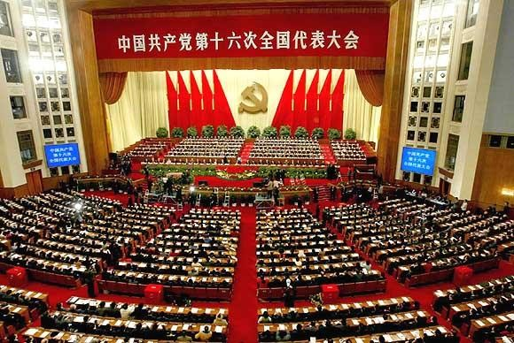

百年印记
党代会是党内各方面代表的大聚会，是代表们展现性情和才智的大舞台。
不了解中国共产党，就无法了解近现代以来的中国；不了解历次党代会，就无法了解中国共产党
-
1921
中国共产党第一次全国代表大会在上海法租界望志路106号（今兴业路76号）秘密召开。
-
1927
8月1日2时，在周恩来、贺龙、叶挺、朱德、刘伯承的领导下，南昌起义开始。
-
1934
第五次反围剿失败后，中央主力红军为摆脱国民党军队的包围追击，被迫实行转移，退出中央根据地，进行长征。
-
1935
遵义会议是指中共中央政治局在贵州遵义召开的独立自主地解决中国革命问题的一-次极其重要的扩大会议。
-
1945
党的七大对三大作风作了理论上的全面概括。中国共产党的三大作风，理论联系实际的作风；和人民群众紧密联系在一起的作风；批评与自我批评的作风。
-
1949
10月1日，中华人民共和国成立。下午3时，首都30万人聚集在天安门广场，隆重举行开国大典。
-
1954
第一届全国人民代表大会选举或决定产生的中华人民共和国第一届国家主席为毛泽东，第一届常务委员会委员长为刘少奇，第一届国务院总理为周恩来。
-
1978
中国共产党第十一届中央委员会第三次全体会议于12月18日至22日在北京举行。全会的中心议题是讨论把全党的工作重点转移到社会主义现代化建设上来。
-
1997
6月30日午夜至7月1日凌晨，香港会议展览中心新翼灯火辉煌，举世瞩目的中英两国政府香港政权交接仪式在这里的五楼大会堂隆重举行。
-
1999
12月20日零时，中华人民共和国和葡萄牙共和国两国政府在澳门文化中心举行政权交接仪式。
-
2002
党的十六大，是中国共产党在新世纪召开的第一次全国代表大会，也是在我国进入全面建设小康社会、加快推进社会主义现代化的新的发展阶段召开的一次十分重要的代表大会。
-
2007
第十七次全国代表大会于10月15日至21日在北京召开。
-
2008
北京奥运会火炬接力活动的主题是“和谐之旅”，以“点燃激情 传递梦想”（Light the Passion Share the Dream）为口号。
-
2012

11月8日9:00在人民大会堂大礼堂举行。大会选举了新一届的中共中央领导层，包括中央委员会委员、中央候补委员、中央纪律检查委员会委员。
-
2020
习近平说，从现在到二〇二〇年，是全面建成小康社会决胜期。